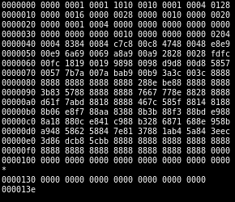

Executables, also known as binaries, are files containing computer-readable instructions. These instructions are often in machine code: random letters and numbers to the human eye.
Technically, you could write a computer program with these random letters and numbers. However, it is much easier to write human-readable code, or ‘source’ code. Source code is translated into machine code before it can be executed by a computer. An executable will often contain additional machine code on top of the source code it translated. This extra code is based on the language you used to write the source code - the Java language, for instance, will add machine code that cleans up memory and handles code exceptions. The main point: Computers have to translate languages into their machine language before executing them.